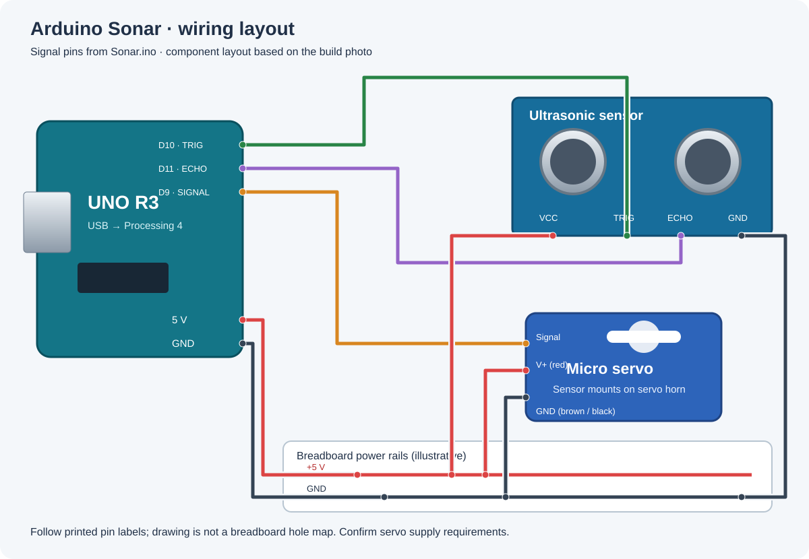

Arduino: Sonar
Connection guide based on Sonar.ino and the build photograph. Signal pins match the sketch; component placement is arranged for readability.
AI assistance: This wiring diagram was created using artificial intelligence, based on the project’s code and reference photograph.

Pin connections
| Arduino pin | Connect to |
|---|---|
| D10 | Ultrasonic sensor TRIG |
| D11 | Ultrasonic sensor ECHO |
| D9 | Servo signal |
| 5 V rail | Ultrasonic VCC and servo positive supply (confirm component ratings) |
| GND | Common ground for sensor, servo, and Arduino |
Build notes
- The servo starts at 90° and sweeps between 0° and 180°.
- The Arduino sends angle and distance in centimeters over USB serial at 9600 baud. Open the Processing 4 sketch and select the Arduino port to view readings.
- The sketch reports distances from 2 to 200 cm; a value of -1 indicates an invalid reading.
- The photo shows an Uno-compatible board, breadboard, ultrasonic module, and micro servo. The diagram illustrates a shared 5 V rail; confirm the sensor and servo ratings. If the servo needs a separate regulated supply, connect its ground to Arduino GND and keep its positive supply separate from the Uno 5 V pin.
- Servo signal is typically orange or yellow, positive red, and ground brown or black; verify your servo’s labeling. Disconnect power before changing wiring.
Reference: Arduino and Processing 4 code.